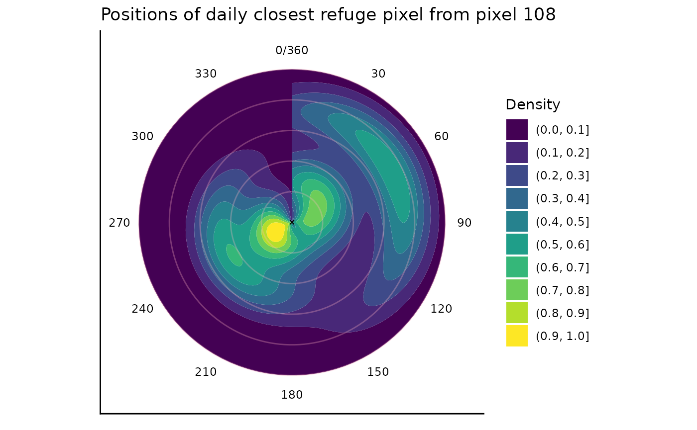

vignettes/j_calc_metrics_escape.Rmd
j_calc_metrics_escape.RmdCompute daily metrics related to the of the nearest “refuge area”, its direction or position. The function only seek for refuge in 2D.
extreme_events_output: If a the full output of BEE.calc.id.extreme_events(), which means a list with 2 objects : the spatraster with binarized value AND the list of dataframe with one dataframe per pixel. See vignette 3.1 Identify extreme event according specific constraints for more informations.
start_date: First day on which you want to start computing metrics. Optional argument.
end_date: Last day on which you want to compute metrics. Optional argument.
pixel: A vector with x,y coordinates or a df of x,y coordinates or “all” if you want to compute distance metrics for all pixels in the raster provided through “extreme_event_list”.
only_days_EE: TRUE if you want an output including all days (even if they don’t belong to an extreme event), FLASE if you want an output with only the date that belong to an extreme event.
group_by_event If TRUE, you will get a mean value per metrics per extreme event for every pixel analysed. If FALSE you will get daily value for each metrics. Use FALSE to be able to use the output in BEE.data.merge().
You will receive a warning if :
You will receive a message in the following case :
- Several pixels are “the closest pixel” which means there are sevral
refuge area at the same distance. The azimut to the closest refuge pixel
is the azimut to the pixel that as the lowest pixel id. - No extreme
event was found on the given pixel over the time period provided through
“start_date” and “end_date”. - For a given date, the
raster (area provided) was fully covered by an extreme event, which
means that it was not possible to identify a place to escape from the
extreme event. - The combination of arguments is not handled by the
function.
You will get a list of dataframes containning the informations in the table bellow and a spartaster with all the extreme events, identified daily:
| Column name | Description | Class | Unit |
|---|---|---|---|
| pixel_id | Pixel number in the spatraster | integer | |
| date | Date associated to the observation * | Date | |
| x | Longitude | double | decimal degree |
| y | Latitude | double | decimal degree |
| to_x | Longitude of the closest pixel | character | decimal degree |
| outside the extreme event. | |||
| to_y | Latitude of the closest pixel | character | decimal degree |
| outside the extreme event. | |||
| pixel_to_id | Pixel number of the closest pixel | character | |
| outside of the extreme event. | integer | ||
| distance | Distance to the closest pixel outside | character | m |
| the extreme event | |||
| azimut | Angle between north and the axis | character | degrees |
| formed by the pixel to flee and the | |||
| refuge pixel | |||
| ID | The event identifier | character |
* Same format as the in the spatraster provided (here yyyy-mm-dd)
We need the full output of *BEE.calc.id_extreme_event()..
library(BioExtremeEvent)
# reconstruct the output of BEE.id.extreme_event() from data saved in local:
file_name_1 <- system.file(file.path("extdata",
"binarized_corrected_spatraster.tiff"),
package = "BioExtremeEvent")
extreme_event_spatraster <- terra::rast(file_name_1)
file_name_2 <- system.file(file.path("extdata",
"binarized_corrected_df.rds"),
package = "BioExtremeEvent")
extreme_event_list <- readRDS(file_name_2)
extreme_event <- list(extreme_event_spatraster,extreme_event_list)
# create a dataframe with the positions of the studdied sites:
GPS <- data.frame(x = c(3.7659),
y = c(43.4287))
library(BioExtremeEvent)
escape <- BEE.calc.escape(
extreme_events_output = extreme_event,
start_date = "2024-05-01",
end_date = "2024-11-30",
pixel= GPS,
only_days_EE = FALSE,
group_by_event = FALSE
) ## When several pixels are the 'closest pixel', the one with the smallest
## number/id is kept to compute shortest distance and azimut. Moreover, this
## function uses 'geosphere::distHaversine' to compute distances, it accounts
## for earth rotondity, which is better than euclidian distance, but it
## consider the earth as a sphere, thus near the poles, this methods is less
## percise than geosphere::distVincentyEllipsoid. This is a compromise between
## computation speed and precision. The estimate error using distHaversine
## compare to distVincentyEllipsoid is between 1 km and 5 km for a distance of
## 300 km in polar area.## During the following dates, the raster was fully covered by an EE and it
## was no possible to compute a distance to escape or an azimut.2024-11-17, 2024-11-18, 2024-11-19, 2024-11-20
library(BioExtremeEvent)
escape_EE_ONLY <- BEE.calc.escape(
extreme_events_output = extreme_event,
start_date = "2024-05-01",
end_date = "2024-11-30",
pixel= GPS,
only_days_EE = TRUE,
group_by_event = TRUE
) ## When several pixels are the 'closest pixel', the one with the smallest
## number/id is kept to compute shortest distance and azimut. Moreover, this
## function uses 'geosphere::distHaversine' to compute distances, it accounts
## for earth rotondity, which is better than euclidian distance, but it
## consider the earth as a sphere, thus near the poles, this methods is less
## percise than geosphere::distVincentyEllipsoid. This is a compromise between
## computation speed and precision. The estimate error using distHaversine
## compare to distVincentyEllipsoid is between 1 km and 5 km for a distance of
## 300 km in polar area.## During the following dates, the raster was fully covered by an EE and it
## was no possible to compute a distance to escape or an azimut.2024-11-17, 2024-11-18, 2024-11-19, 2024-11-20## Warning in BEE.calc.escape(extreme_events_output = extreme_event, start_date =
## "2024-05-01", : NAs introduced by coercion
## Warning in BEE.calc.escape(extreme_events_output = extreme_event, start_date =
## "2024-05-01", : NAs introduced by coercion## Warning in as.circular(x): an object is coerced to the class 'circular' using default value for the following components:
## type: 'angles'
## units: 'radians'
## template: 'none'
## modulo: 'asis'
## zero: 0
## rotation: 'counter'
## conversion.circularxradians
## Warning in as.circular(x): an object is coerced to the class 'circular' using default value for the following components:
## type: 'angles'
## units: 'radians'
## template: 'none'
## modulo: 'asis'
## zero: 0
## rotation: 'counter'
## conversion.circularxradians
## Warning in as.circular(x): an object is coerced to the class 'circular' using default value for the following components:
## type: 'angles'
## units: 'radians'
## template: 'none'
## modulo: 'asis'
## zero: 0
## rotation: 'counter'
## conversion.circularxradians
## Warning in as.circular(x): an object is coerced to the class 'circular' using default value for the following components:
## type: 'angles'
## units: 'radians'
## template: 'none'
## modulo: 'asis'
## zero: 0
## rotation: 'counter'
## conversion.circularxradians
## Warning in as.circular(x): an object is coerced to the class 'circular' using default value for the following components:
## type: 'angles'
## units: 'radians'
## template: 'none'
## modulo: 'asis'
## zero: 0
## rotation: 'counter'
## conversion.circularxradians
## Warning in as.circular(x): an object is coerced to the class 'circular' using default value for the following components:
## type: 'angles'
## units: 'radians'
## template: 'none'
## modulo: 'asis'
## zero: 0
## rotation: 'counter'
## conversion.circularxradians
## Warning in as.circular(x): an object is coerced to the class 'circular' using default value for the following components:
## type: 'angles'
## units: 'radians'
## template: 'none'
## modulo: 'asis'
## zero: 0
## rotation: 'counter'
## conversion.circularxradians
## Warning in as.circular(x): an object is coerced to the class 'circular' using default value for the following components:
## type: 'angles'
## units: 'radians'
## template: 'none'
## modulo: 'asis'
## zero: 0
## rotation: 'counter'
## conversion.circularxradiansNote: if you use “only_days_EE” = FALSE and “group_by_event” = TRUE, you will get a line for the period in bteween extreme events, this allow to keep a continuous time line.
# Extract the dataframe associated to pixel 108 from th list of df:
escape_108 <- escape[["108"]]
# Plot:
library(ggplot2)
## Create circles to add on plot:
cercles <- seq(0, 50000, by = 10000)
ggplot(escape_108, ggplot2::aes(x = as.numeric(azimut), y = as.numeric(distance))) +
# Densité de points par saison
stat_density_2d_filled(
geom = "polygon",
contour_var = "ndensity",
show.legend = TRUE,
alpha = 1
) +
geom_point(data = data.frame(x = 0, y = 0),
ggplot2::aes(x = x, y = y),
shape = 4, size = 1, stroke = 0.5, color = "black", inherit.aes = FALSE) +
# Dessiner les cercles concentriques blancs
geom_hline(yintercept = cercles, color = "lightpink", linetype = "solid", alpha = 0.3) +
coord_polar(theta = "x", start = 0) +
scale_x_continuous(
limits = c(0, 360),
breaks = seq(0, 360, by = 30),
expand = c(0, 0)
) +
theme_classic() +
theme(
strip.background = element_blank(),
axis.text.y = element_blank(),
axis.ticks.y = element_blank(),
axis.title = element_blank(),
panel.grid.minor = element_blank()
) +
ggplot2::labs(title = "Positions of daily closest refuge pixel from pixel 108", fill = "Density")## Warning in FUN(X[[i]], ...): NAs introduced by coercion
## Warning in FUN(X[[i]], ...): NAs introduced by coercion## Warning: Removed 184 rows containing non-finite outside the scale range
## (`stat_density2d_filled()`).